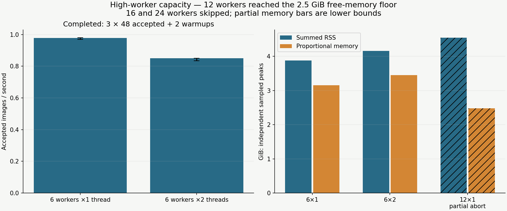
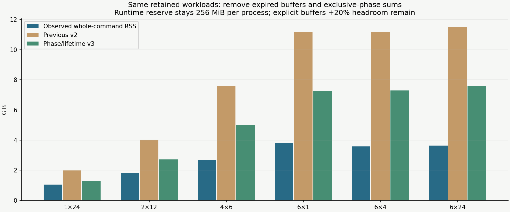
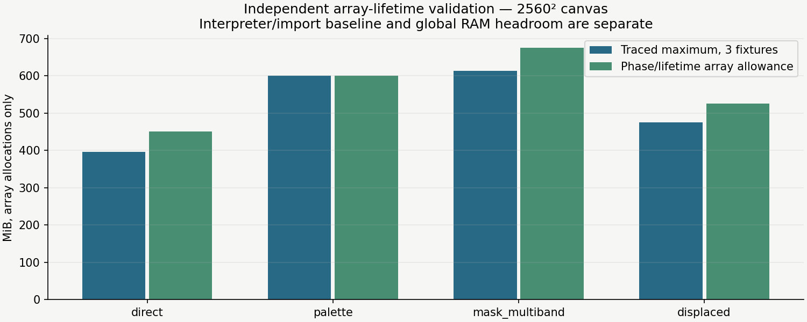

The 12-worker ramp reached the 2.5 GiB available-memory floor after about 7 seconds. Its isolated coordinator/workers were stopped. 12×2,16 and 24 are skipped because the lower-count headroom condition failed. No completed 12-worker throughput or complete peak is inferred.
Completed six-worker cases preserve exact encoded images, masks and annotation signatures. Three rotating-order repetitions use 48 accepted 1280² heavy pad scenes (+2 warmups), standard background mixture, cache 0 and four QA samples. Repeated deterministic scenes measure execution variation. Whole-command memory includes preparation/warmup, while generation throughput excludes them.

The prior estimator counted expired arrays and added synthesis, foreground rendering and mask-processing peaks together. The replacement uses the renderer's release schedule, operation scratch, precision propagation and maximum worker phase. Each source's decode/cover sizes stay correlated; extreme foreground rotation/resize remains accounted for. Runtime stays 256 MiB per process. Result/cache/native reserves and 20% headroom are explicit.


Predictions are RSS planning upper estimates. Summed RSS repeats shared pages; Linux PSS counts proportional physical memory, and USS counts private pages. These are different metrics, with different sampling rates. The available-memory guard checks the host at 0.1-second intervals; detailed PSS/USS is sampled once per second. A sampled guard is not an OS hard cap.
Per-repeat measurements, abort, skipped decisions, allocation evidence and source hashes